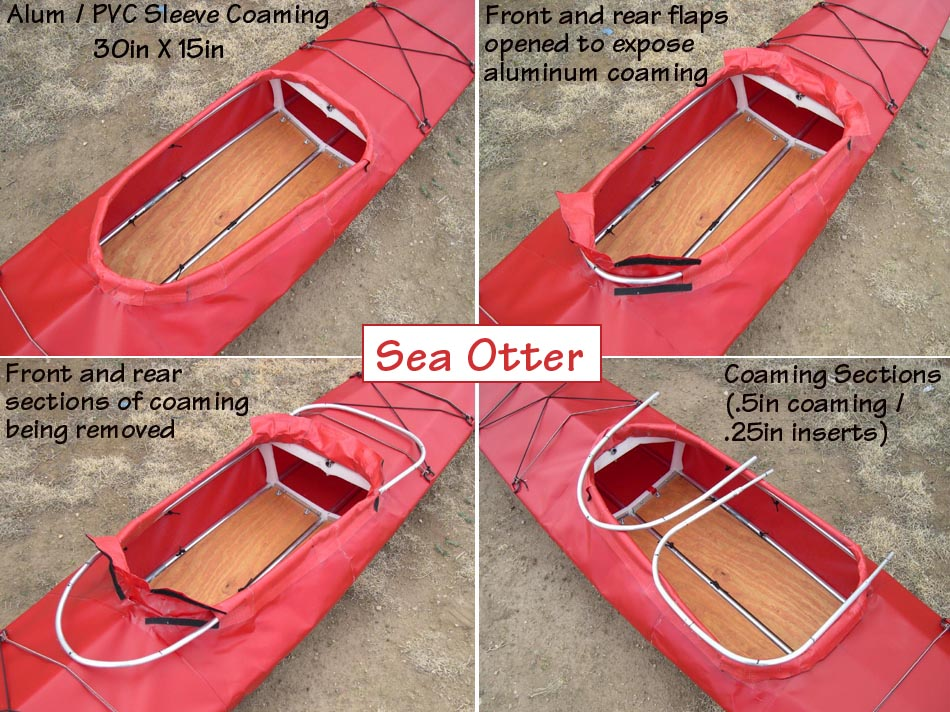

| Sea Otter - R ( Take-Apart Coaming) | Menu Previous Page Next Page |
|
 The Sea Otter's 30in X 15in aluminum coaming is removed for break-down and packing of the kayak. The .5in coaming sections are connected by .25in inserts. The PVC sleeve sections are glued to the deck and the front and rear flaps are connected with Velcro. This type coaming is easy to assemble, light weight, and packs small. The only opening will be at the rear of the sleeve when the zipper is installed on the aft deck. The opening will be covered with a small Velcro flap. |
|